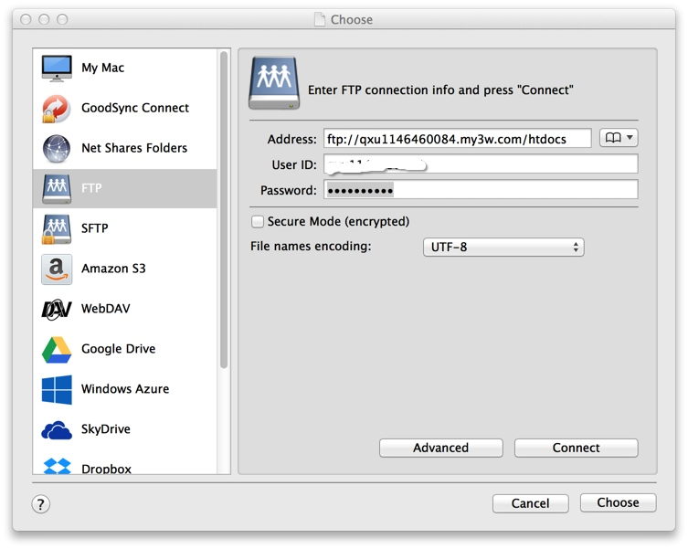
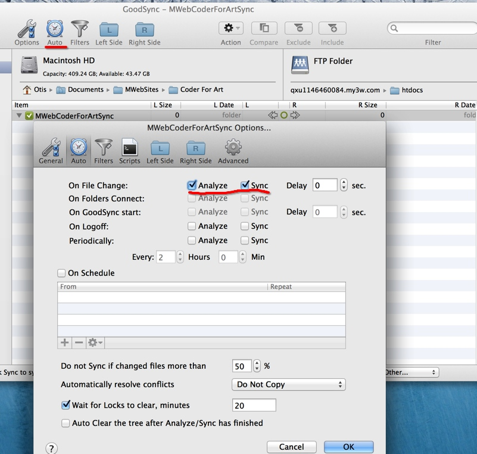

GoodSync syncs files between your computer, mobile devices, FTP, SFTP, Amazon S3, Google Drive, SkyDrive, WebDAV, Azure.
Go to http://www.goodsync.com/ download GoodSync and install. I checked Do not setup GoodSync Connect
and finish install.
Click Create a New Job
button to create a new synchronize job.
Select MWeb build site path for the left panel.
If you didn't change MWeb build site path,the default path is:
file:///Users/You Account/Library/Containers/com.coderforart.MWeb/Data/Documents/MWeb/LocalData/Site
To find this path, you must checked Show hidden Files/Floders.
Select sync to path for the right panel.I choose sync to FTP.

Click auto
button,enable On File Change: Analyze,Sync. Click OK
.

All is OK!!
When you click Build site
button in MWeb, GoodSync will automatically synchronize your static website to FTP.